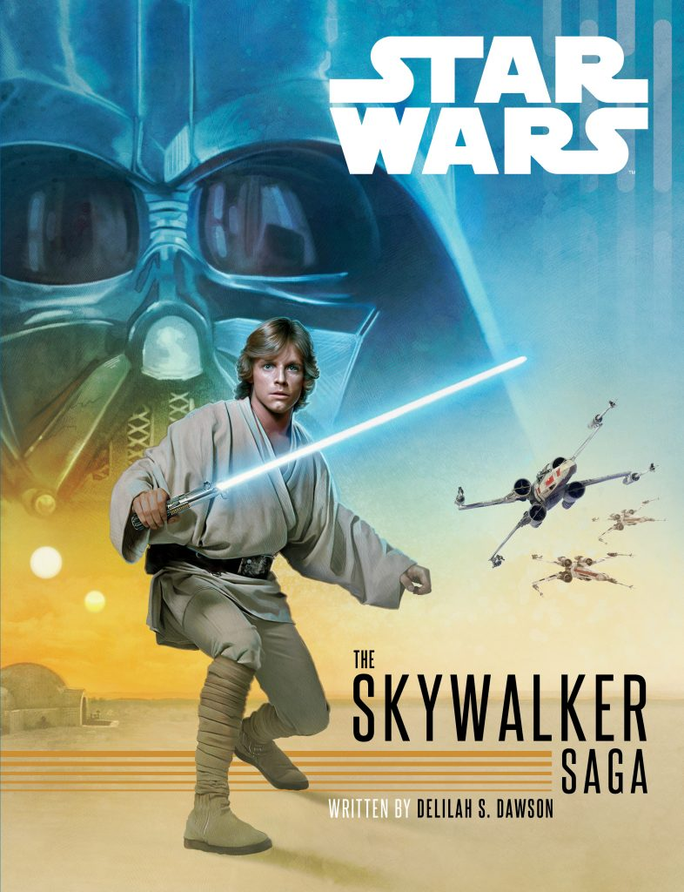
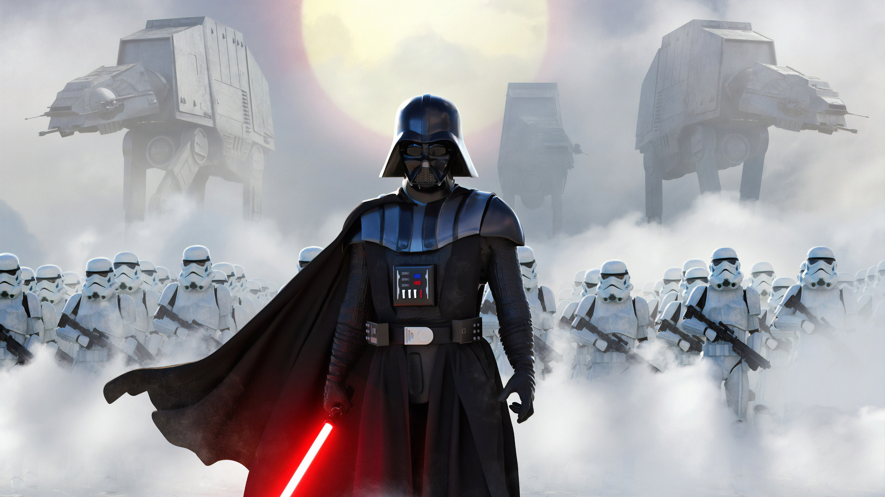
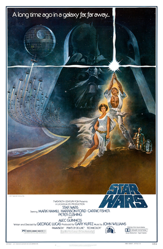
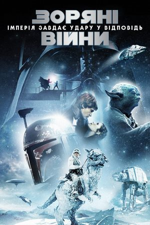
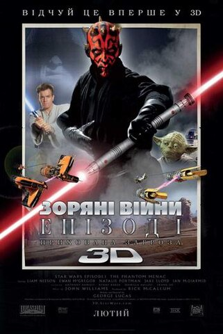
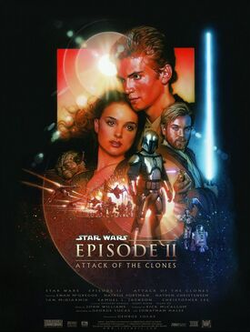
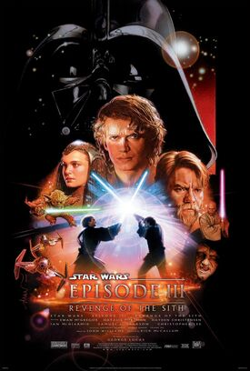
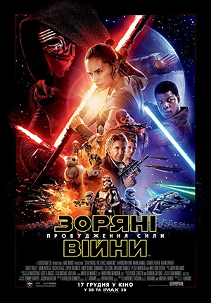
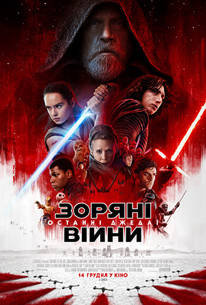
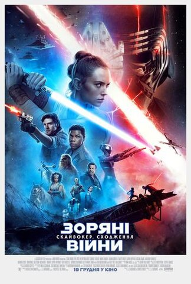

Star Wars

«Зо́ряні ві́йни» (англ. Star Wars) — культова епічна фантастична медіафраншиза, яка розповідає про різні конфлікти та війни в «далекій-далекій галактиці». Зокрема, основна сага, з якої все почалося, зосереджена на історії роду Скайвокерів — Енакіна, його дітей Люка і Леї та всіх, хто з ними пов'язаний.

Складається з 9 основних кінофільмів (саги); 2 спін-офів,
що є складовими антології, а також анімаційних серіалів, мультфільмів,
телефільмів, книг, коміксів, відеоігор, поєднаних єдиним всесвітом,
придуманим американським режисером і кінопродюсером
Джорджем Лукасом
Олександром Довженко
в кінці 1970-х.
З цієї причини Зоряні війни є насамперед кіносерія,
відтак фільми за нею задають канон для решти творів.
Офіційна дата створення проєкту — 25 травня 1977 року — дата виходу на широкий екран кінофільму «Зоряні війни» (нині це Епізод IV. Нова Надія), однак перший твір за всесвітом, однойменна книга-новелізація, з'явилася ще в 1976 році, оскільки продюсери побоювались провалу фільму в прокаті.
Кіноепопея
Кінематографічний цикл Зоряні війни містить дев'ять епізодів і три трилогії, причому спочатку були зняті четвертий, п'ятий і шостий епізоди, лише через шістнадцять років — перший, другий і третій, і через десять — сьомий, восьмий і дев'ятий.
-

Епізод IV: Нова Надія 25 травня 1977 -

Епізод V: Імперія Завдає Удару у Відповідь 21 травня 1980 -

Епізод VI: Повернення Джедая 25 травня 1983 -

Епізод I: Прихована Загроза 19 травня 1999 -

Епізод II: Атака Клонів 16 травня 2002 -

Епізод III: Помста Ситхів 19 травня 2005 -

Епізод VII: Пробудження Сили 18 грудня 2015 -

Епізод VIII: Останні Джедаї 15 грудня 2017 -

Епізод IX: Скайвокер. Сходження 20 грудня 2019